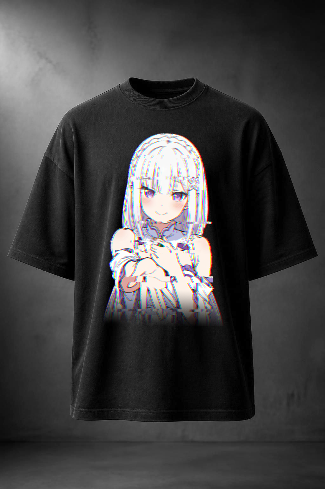
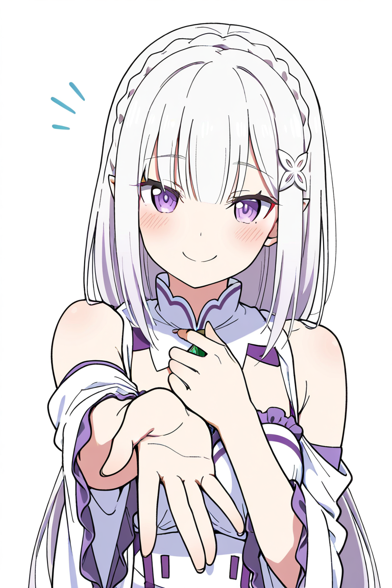
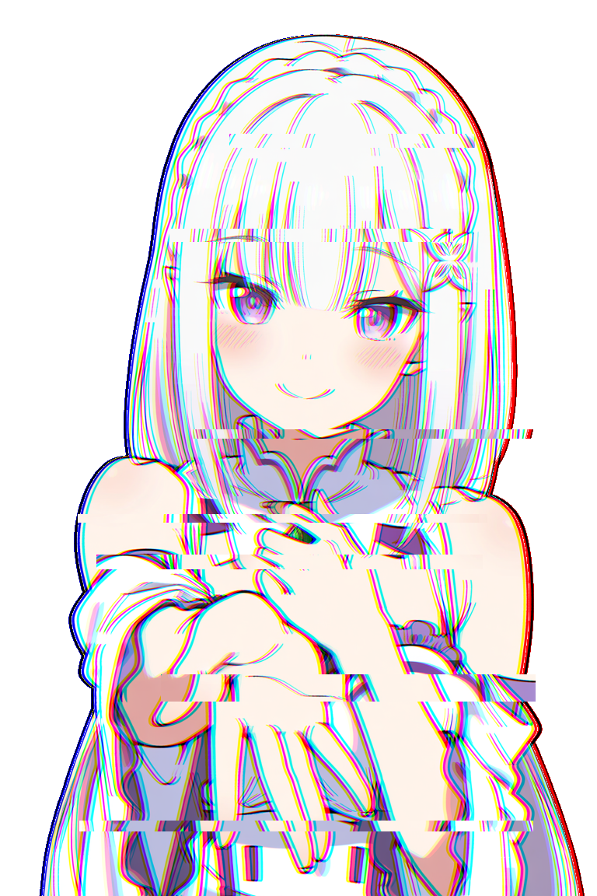
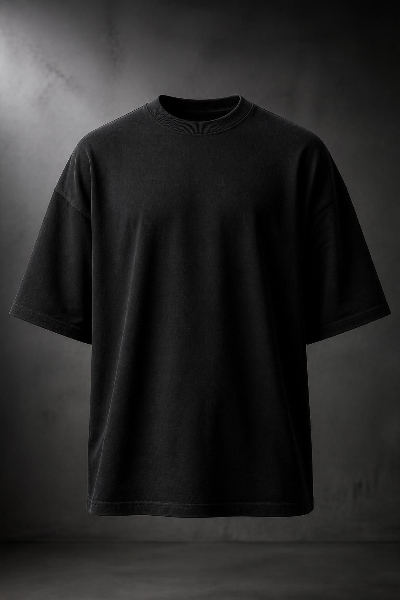

Emilia Glitch Merch

Задача
Разработать стильный концепт оверсайз-футболки с персонажем Эмилия (Re:Zero), используя цифровые искажения и интеграцию принта в текстуру ткани.
Инструменты
Photopea, AI-генерация (генерация основы мокапа и генерация арта Эмилии)
01 / Процесс разработки

Графическая основа
Арт персонажа

Графическая основа
Арт персонажа с эффектом хроматической аберрации и цифрового шума (Glitch Art) для основы принта.

Сгенерированная основа мокапа
Базовое изображение черной оверсайз-футболки со спущенным плечом, полученное через нейросеть по текстовому промпту.
02 / Спецификации проекта
Технология реализации: Прямая цифровая печать (DTG) на плотном хлопке (Heavy Cotton)
Стилистика: Аниме-мерч, Глитч-арт